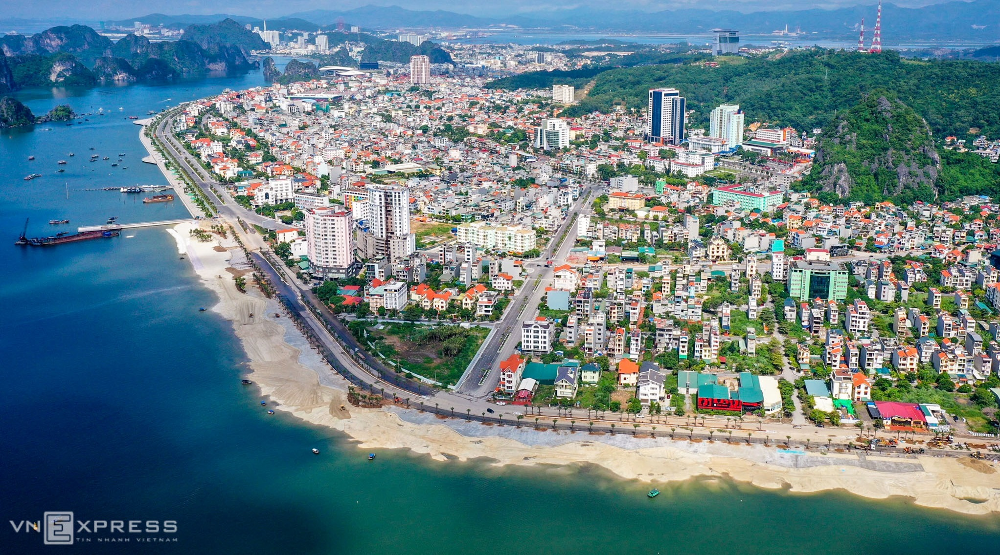

HELLO, IT'S NICE TO MEET YOU

Quảng Ninh là một tỉnh nằm ở phía Đông Bắc Việt Nam, giáp biên giới phía Bắc với Trung Quốc và ven biển phía Đông.
Vị trí chiến lược của tỉnh này không chỉ là điểm nối giao thông quan trọng với các tỉnh lân cận mà còn là một trong những
trung tâm kinh tế, du lịch hàng đầu của Việt Nam.
Lịch sử của Quảng Ninh có liên quan sâu sắc đến nền văn minh đất đỏ sông Hồng và văn hóa các dân tộc thiểu số ở vùng núi phía Bắc.
Tuy nhiên, điểm khởi đầu của sự phát triển của Quảng Ninh là việc phát hiện và khai thác lượng than đá lớn nhất cả nước từ thế kỷ 19,
mở ra một thời kỳ phồn thịnh kinh tế cho vùng này.
Văn hóa ẩm thực của Quảng Ninh phản ánh sự đa dạng và phong phú của vùng đất này. Với sự kết hợp tinh tế giữa hương vị biển và đồng bằng, các món ăn tại đây thường mang đến sự độc đáo và hấp dẫn. Từ những món hải sản tươi ngon đến các món đặc sản độc đáo như chả mực, bún cá, hay chả rươi, ẩm thực Quảng Ninh là một phần không thể thiếu của văn hóa ẩm thực Việt Nam. Thưởng thức các món ăn tại Quảng Ninh không chỉ là trải nghiệm về hương vị ngon lành mà còn là cơ hội để hiểu sâu hơn về di sản văn hóa ẩm thực đặc biệt của vùng đất này.
Chỉ cần một lần đặt chân đến mảnh đất Quảng Ninh, mọi du khách đều sẽ bị mê hoặc bởi thiên nhiên núi rừng hùng vĩ, con người thân thiện và nhiều món ăn hấp dẫn.
Và điều mà nhiều du khách cảm thấy tò mò nhất chắc hẳn là đặc sản Quảng Ninh phải không nào? Vậy vùng đất này có những món ăn nào hấp dẫn du khách.
Hãy để VN Foods giúp bạn hiểu hơn về văn hoá ẩm thực nơi đây nhé!